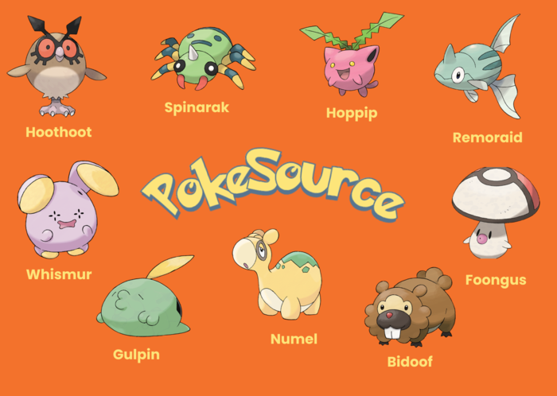

PoKémon Go: Dicas para capturar Pokémons Lendários!
É decepcionante, mas não espere pegar Pokémons lendários em seu primeiro “Raid”. As taxas de captura diferem por Lendário, mas as chances não são altas;
Aumente suas chances com bolas curvas e Golden Razz Berries, mas só faça bolas curvas se tiver certeza de que pode acertá-las. Portanto, não desperdice essas bolas desnecessariamente;
Leve amigos não apenas para apoiar o ataque, mas também para ganhar Pokébolas extras. Dessa forma, dependendo do seu status de relacionamento no jogo com amigos, você ganhará mais bolas de Raid e elas definitivamente serão úteis;
Jogue sua Pokébola depois que um Pokémon Lendário acaba de fazer seu movimento de ataque para se certificar de que ele não jogue sua Pokébola para longe;
Por fim, se você estiver tendo problemas com os números do Raid, tente se inscrever em sua comunidade Discord local ou no Facebook Pokémon Go. Dessa forma, haverá muitas pessoas na mesma situação e organizando grupos de Raid.
Pokémon GO divulga eventos de julho; Mewtwo, Rufflet e mais...
Julho estará repleto de eventos no Pokémon GO. A Niantic divulgou as ações do mês marcado pelo aniversário do game mobile e pelo Pokémon GO Fest 2021. O lendário Mewtwo estará de volta às reides de nível 5, Rufflet estará na Descoberta Extraordinária, e muito mais.
► Pokémon GO Fest 2021:
o maior evento do Pokémon GO acontecerá nos dias 17 e 18 de julho
e já está a venda os ingressos.
►
Encontro de descoberta extraordinária de julho:
Rufflet foi o Pokémon escolhido como recompensa na Descoberta
Extraordinária em julho. A grande novidade é que o bônus da coleta
dos sete selos é um Passe de Reide a Distância. Aparentemente, a
Niantic não vai colocar caixas gratuitas todas as segundas-feiras
como nos últimos meses. Dessa vez, o passe será na caixa de sétimo
dia.
► Reides e megarreides:
● Deoxys em Forma de Defesa: 1º a 16 de julho
● Mewtwo: 16 a 23 de julho
● Um novo lendário: 23 de julho a 1º de agosto
● Mega Houndoom: 1º a 16 de julho
● Mega Gengar: 16 a 23 de julho
● Mega Charizard X: 23 de julho a 6 de agosto
Pokémon GO: como pegar Ditto, lista de disfarces de 2021
Uma das surpresas mais legais do Pokémon GO é capturar um Ditto. A pequena criatura tem a característica única de poder se disfarçar de outros Pokémons. Por isso, capturá-lo no game é tão difícil, por isso preparamos um tutorial com dicas e informações para que isso seja possível.
Para facilitar a busca, a Niantic - desenvolvedora do jogo - disponibilizou uma seleta lista com os Pokémon em que Ditto pode se transformar: Hoothoot, Spinarak, Hoppip, Remoraid, Whismur, Gulpin, Numel, Bidoof e Foongus.
Confira abaixo os disfarces atuais do Ditto: 
Uma dica para conseguir um Ditto é ficar atento ao fortalecimento pelo clima do jogo. Quando um Pokémon que deveria ser fortalecido pelo clima não está com o círculo ao seu redor, há a possibilidade de ser um Ditto disfarçado.
Vale ressaltar que esse monstrinho se revela apenas após a captura, só neste momento o jogador terá certeza de que capturou um Ditto. Atualmente, o monstro não é recompensa de nenhuma missão especial de pesquisa.